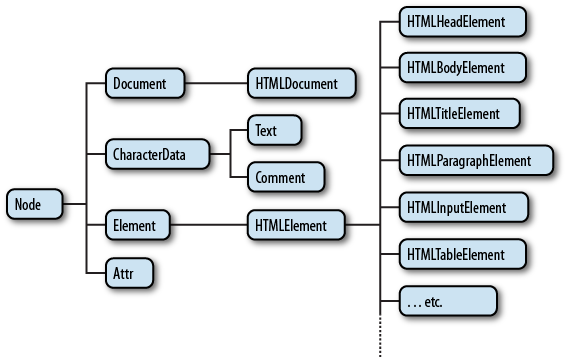
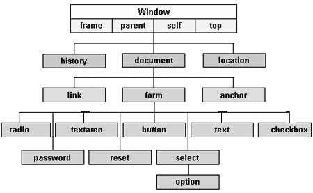

Vad är DOM?
DOM står för Document Object Model och representerar HTML-dokumentet som ett träd av noder. Med DOM kan man ändra innehåll, struktur och stil på webbsidor med JavaScript.

DOM-trädet
HTML-dokumentet är uppbyggt som ett träd. Roten är <html>, som innehåller <head> och <body>. Under dessa finns fler noder som <div>, <p> och <img>.

Element och noder
I DOM finns olika typer av noder:
- Elementnoder
- Textnoder
- Attributnoder
- Kommentar-noder
Med JavaScript kan man t.ex. ändra text (textContent), ändra attribut (setAttribute()), lägga till eller ta bort element (appendChild(), removeChild()) och lyssna på händelser (addEventListener()).

Exempel på DOM-manipulation
Här är ett enkelt exempel som ändrar texten i ett element:
const title = document.getElementById("my-title");
title.textContent = "Ny rubrik med JavaScript!";
Denna kod hittar elementet med id my-title och ändrar texten. Det är ett grundläggande sätt att interagera med DOM.